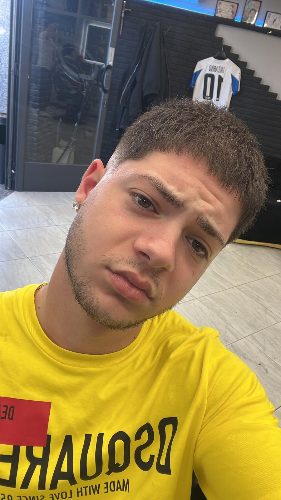

Ciao, sono Francesco D'Alessio
Studente Liceo E. Pascal
Uno studente delle superiori curioso e appassionato di tecnologia, design e impatto sulla comunità. Benvenuto nel mio portfolio digitale di esperienze, progetti e traguardi.

Conoscimi un po' meglio
Ciao! Sono Francesco D'Alessio, studente all'ultimo anno del Liceo E. Pascal. Da sempre nutro una forte passione per il mondo dell'informatica, del design e per tutto ciò che riguarda l'impatto sociale delle nuove tecnologie. La mia più grande motivazione è la progettualità: amo dare forma alle idee e trasformarle in strumenti concreti e accessibili che le persone possano davvero utilizzare nella vita di tutti i giorni. Che si tratti di programmare una piccola web app partendo da zero, dedicare il mio tempo al volontariato sul territorio o mettermi alla prova imparando a usare un nuovo software, affronto ogni sfida con una combinazione di profonda curiosità e dedizione.
Competenze & Strumenti
Percorso di studi ed esperienze
Liceo E. Pascal
Indirizzo scientifico, con specializzazione in scienze applicate e informatica.
FSL — CITTADINANZA DIGITALE
Partecipando al progetto FSL incentrato sulla cittadinanza digitale, ho sviluppato competenze sull'uso etico delle tecnologie e sui sistemi IoT. Attraverso attività d'aula, laboratori interattivi e una visita studio presso l'Università di Salerno, ho potuto esplorare l'ecosistema universitario e analizzare i risvolti innovativi delle nuove tecnologie nei contesti reali.
FSL — LABORATORIO DI BIOTECNOLOGIE
La mia partecipazione al percorso FSL Amgen Biotech Experience mi ha permesso di mettermi in gioco con la pratica di laboratorio, applicando i pilastri della biologia molecolare. Ho sperimentato in prima persona tecniche come la PCR per la replicazione del DNA, l'elettroforesi su agarosio per mappare i risultati, e il taglio mirato del DNA con enzimi di restrizione. Come traguardo finale del progetto, abbiamo assemblato il plasmide ricombinante pARA-R, sperimentando il reale flusso di lavoro della ricerca biomedica.
FSL — PCR
La partecipazione al progetto incentrato sulla Polymerase Chain Reaction (PCR) mi ha consentito di padroneggiare una delle metodologie fondamentali della biologia molecolare. Il percorso, articolato tra approfondimenti teorici e sessioni sperimentali, ha avuto come oggetto il meccanismo di replicazione in vitro del DNA, analizzandone i cicli termici e valutandone l'impatto cruciale nei settori della diagnostica medica, della ricerca scientifica e del comparto biotecnologico.
Le cose che amo fare nel tempo libero
Una galleria delle attività che mi tengono ispirato ed equilibrato.